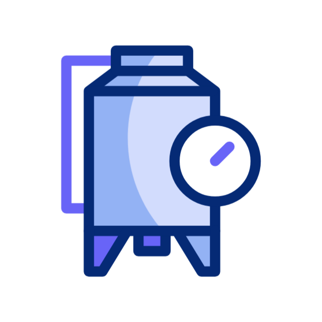
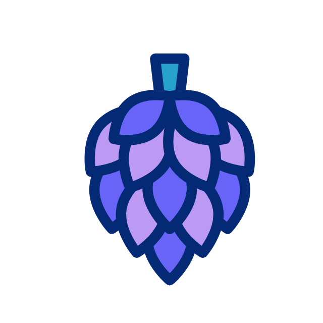

Pokazy warzenia piwa domowego
Jeśli jesteś zainteresowany:
rozpoczęciem przygody z piwowarstwem domowym,
odkryciem sekretów procesu warzenia piwa,
poznaniem składników piwa,
zapoznaniem się ze sprzętem do warzenia piwa domowego,
stylami piw, charakterystyką i umiejętnością ich rozróżniania?
Oferta zawiera:
Sprzęt

Proces

Składniki
Czas i miejsce
Uczestnictwo
Degustacja
Icons designed by Freepik